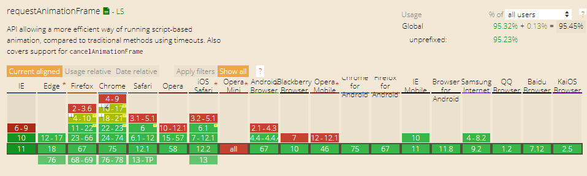

JavaScript定时器(Timer)原文出处:本文由博客园博主G_Owen提供。
原文连接:https://www.cnblogs.com/gaoguowen/p/11119088.html
什么是定时器
- 简单来说就是在一段时间间隔后执行一个函数或执行一段代码的方法
- JavaScript 原生提供几种定时器
setInterval、setTimeout 、requestAnimationFrame
- 执行函数中的作用域未全局作用域this指向全局，可通过
bind 方法给执行函数传递参数或指定作用域 (严格模式下，setTimeout( callback,delay)中callback里面的this仍然默认指向window对象， 并不是undefined)
- 回调函数会放到 marco task 中等道主线程空闲时才会去执行，因此间隔时间会稍长；调用marco task中的顺序，先进先出原则
setInterval
- 每相隔一段时间间隔执行一个函数或执行一段代码的方法
- 通过
clearInterval方法来取消定时器
let timerInterID = window.setInterval(callback,delay[,param...])
setTimeout( clearInterval.bind(null,timerInterID),1000)
参数
- callback 重复执行的函数或代码段（不推荐使用一段字符串构成的代码，应为这样做不安全，会被不法分子利用）
- delay 时间间隔，单位为毫秒（ms）实际间隔可能会稍长（最小间隔是4ms）
- timerInterID 每次调用
setInterval方法返回的唯一 ID，可通过调用 clearInterval方法来清除setInterval方法
- param1, ..., paramN 传递给执行函数（callback）的参数 ( )
setTimeout
- 在一段时间间隔后执行一个函数或执行一段代码的方法
- 通过
clearTimeout方法来清除定时器
let timerTimeID = setTimeout(callback,delay[,param1, ..., paramN ])
参数
- callback 重复执行的函数或代码段（不推荐使用一段字符串构成的代码，应为这样做不安全，会被不法分子利用）
- delay 时间间隔，单位为毫秒（ms），默认为0实际间隔可能会稍长（最小间隔为 4ms ）
- timerTimeID 每次调用
setTimeout方法返回的唯一 ID，可通过调用 clearTimeout方法来清除setTimeout方法
- param1, ..., paramN 传递给执行函数（callback）的参数 ( )
requestAnimationFrame
- 类似于
setTimeout方法，执行动画时推荐使用
- 会在浏览器下次重绘前执行函数
- 采用系统时间间隔，保持最佳绘制效率，不会因为间隔时间过短，造成过度绘制，增加开销
- 当运行在后台标签页或隐藏在
iframe时，会暂停调用
let frameID = window.requestAnimationFrame(callback)
setTimeout(cancelAnimationFrame.bind(null,FrameID),1000)
参数
- callback 更新动画帧所调用的函数
- 一帧大约 16.7ms
兼容性
